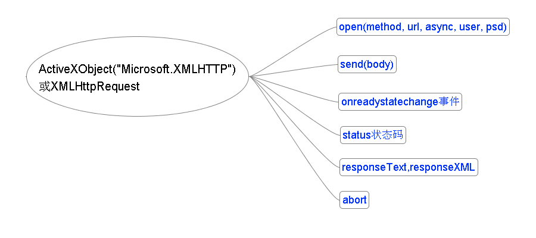

- ajax是个什么东西？
- ajax到底都能干些什么？
- ajax的局限性是那些呢？

function loadAjax(option,callback){
var xhr = (window.ActiveXObject) ? new ActiveXObject("Microsoft.XMLHTTP") : new XMLHttpRequest();
if(option.method.toLowerCase() == 'get'){
for(prop in option.data){
option.url = HE.setPara(option.url,prop,option.data[prop]);
}
option.data = null;
}else{
if(typeof(option.data) != "string"){
option.data = HE.encode(option.data);
}
}
try{
if(option.async !== false){option.async = true;}
xhr.open(option.method || "POST",option.url,option.async);
xhr.setRequestHeader("Content-Type",option.contentType||"application/x-www-form-urlencoded");
xhr.onreadystatechange = handleStateChange;
xhr.send(option.data);
}catch (ex) {
return "";
}
function handleStateChange(){
if (xhr!=null && xhr.readyState==4){
callback(eval("("+xhr.responseText+")"));
}
}
}
- JsonP是技巧而不是技术
- JsonP是通过前后端配合实现的
- 后端遵从js语法，前端基于强大的闭包
function loadJsonP(url, callback){
var callbackName = HE.guid();
var url = HE.setPara(url,"callback",callbackName);
window[lsGUID] = callback;
var node = document.createElement('script');
node.src = url;
document.getElementsByTagName('head')[0].appendChild(node);
}